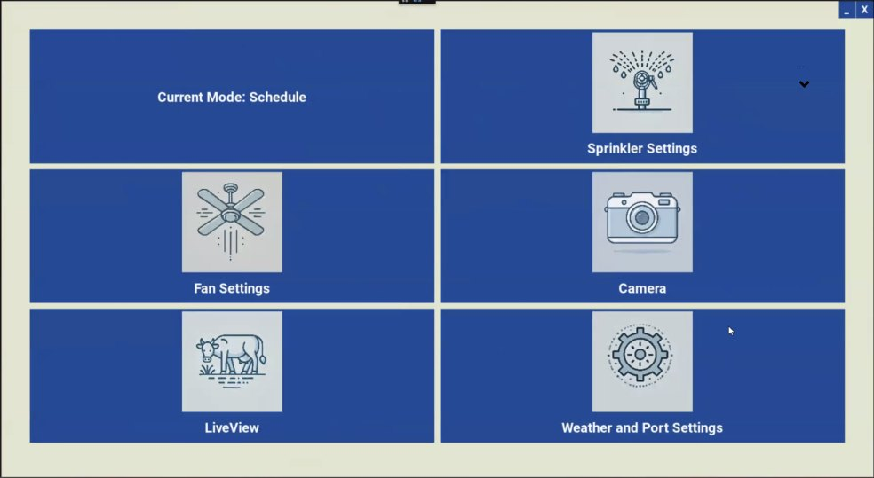
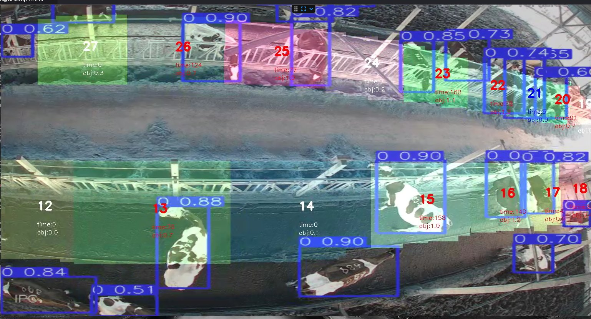
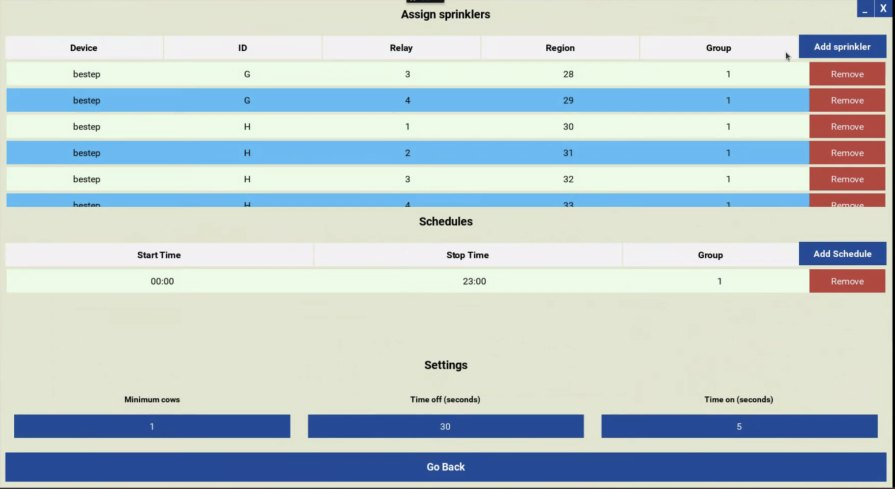

Context
BullsEye is BullTech’s camera- and AI-based system for cooling dairy cows at the feed lane. A central computer processes camera data in real time and controls individual fans and sprinklers, activating cooling where cows are detected and adjusting the number of cooling cycles as needed. The system operates without tags attached to the cows.
The system was already in use when I joined the project. Its interface had been built by the developers, and the initial goal was to make it easier for farmers to access all cameras and check that they were working.
I worked with the product manager and developers on the UX specification and interface redesign. During our review, I proposed restructuring the navigation and bringing all technician settings together in one place.
The problem
The existing interface made routine monitoring unnecessarily complicated.
- Too many parameters on screen. Technical settings competed with the information farmers needed for everyday use.
- No navigation. Every screen opened from the home screen, so users had to return to it each time they wanted to reach another part of the system.
- Missing context. Farm and camera names were not consistently visible, making it difficult to identify the view on screen.
- Poor readability and visual consistency. Parameters were difficult to read over camera images, and the colors and icons lacked a unified visual language.
Rethinking the structure
The redesign needed to support two distinct tasks: checking cameras during everyday farm work and configuring the system during technical service.
I proposed a consistent layout with persistent navigation, visible farm information and a central area where the screen content would change. Users can move between screens without detours and always know where they are.
I also proposed gathering all technician settings in one password-protected area. This would give technicians a clear place to find their controls and keep detailed configuration separate from farmers’ daily monitoring.
Design decisions
- Navigation on the side, not the top
- The old interface had no navigation: every screen opened from the home screen, and reaching another one meant going back to it first. BullsEye runs as a desktop application, so the top bar already carries the window controls and the details that must stay visible at all times. I added a fixed sidebar that leads straight to each main screen and kept the top bar for status.
- A consistent frame
- Farm information and the company logo remain visible around the central content area. Each camera view also displays its name, helping users identify what they are looking at.
- Camera tiles, not a list
- I chose a grid of live camera tiles over a list of names. The images refresh every five seconds, so one look at the home screen shows that the system is working, and a camera that is down stands out at once. In the camera view, the image takes priority, with cooling regions and timers shown clearly over it.
- Basic and advanced settings for farmers
- Most farmers need only a few settings, so the schedule opens in Basic. Those who want more control can switch to Advanced for additional parameters.
- One place for technician settings
- Technical parameters are grouped in a single password-protected area. Technicians can find their settings in one place, while farmers’ everyday screens stay focused on monitoring. A Technician mode button on the farmer’s screens opens the same area at the tab that matches that screen, so technicians arrive in the right place.
- A unified visual language
- I introduced the company’s brand colors and a consistent icon style, improved contrast over camera images and replaced the red styling previously used for buttons.
Before and after
Home screen


Camera view

Settings

Outcome
The goalTo make it easier for farmers to access all cameras and check that they were working.
- All cameras on the home screen, with one-click access to individual views and settings always within reach
- A sidebar to every main screen, with no trips back to the home screen
- Technician settings gathered in one protected area
- ShippedThe new interface shipped and is used on dozens of farms in Israel.
- Positive feedbackIn follow-up conversations, farmers gave positive feedback.
- Fewer help requestsThe service team reported fewer help requests from farmers.
In their words
BullsEye application were upgraded significantly by the new design. User interface and functionality expanded and precised thanks to creative ideas which resulted elevated user experience. Customers love the clean design, colours complex are nice to watch, easy to navigate and clear to orient. The process was thorough with many details and problems to solve. Overall result is excellent!